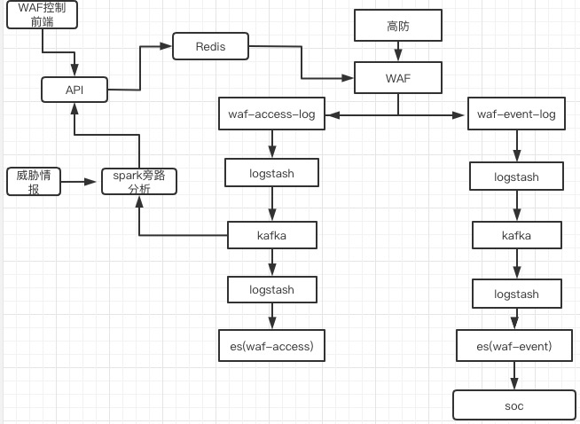
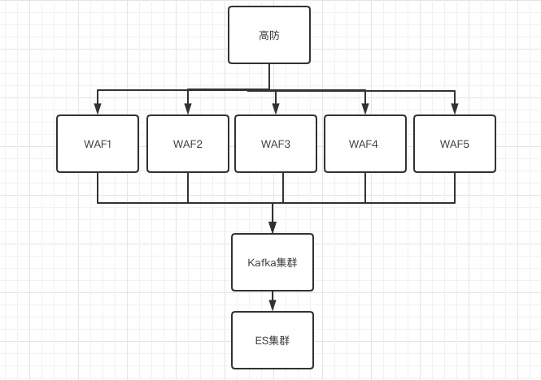

Web应用防护系统（也称为：网站应用级入侵防御系统。英文：Web Application Firewall，简称： WAF）。利用国际上公认的一种说法：Web应用防火墙是通过执行一系列针对HTTP/HTTPS的安全策略来专门为Web应用提供保护的一款产品。
架构
我们的流量第一层先到达高防抗D，做DDOS清洗，然后转发给WAF，由WAF做第二次清洗流控，转发给后端业务LB，整体架构如下，并旁路了分析引擎，弥补了WAF这一块无法做太复杂的计算缺陷，并把分析结果通过接口交给WAF执行。

技术选型
目前，主流的自研WAF实现技术主要是依赖OpenResty技术栈（由中国人章亦春发起），代码部分主要是使用Lua编写,简单的安装如下：
wget https://openresty.org/download/openresty-1.13.6.1.tar.gz
tar -zxvf openresty-1.13.6.1.tar.gz
cd openresty-1.13.6.1/ && ./configure --prefix=/usr/local/openresty --with-pcre-jit --with-http_iconv_module --with-http_gunzip_module --with-http_auth_request_module --with-http_stub_status_module --with-http_gzip_static_module
//根据真实需求调整配置项目
gmake && gmake install
或者
make && make install
第二步，安装luarocks-3.1.3
wget https://luarocks.github.io/luarocks/releases/luarocks-3.1.3.tar.gz
tar -zxvf luarocks-3.1.3.tar.gz
cd luarocks-3.1.3/
./configure --prefix=/usr/local/openresty/luajit --with-lua=/usr/local/openresty/luajit/ --lua-suffix=jit --with-lua-include=/usr/local/openresty/luajit/include/luajit-2.1
//根据真实需求调整配置项目
make &&make install
第三步，安装luasocket
/usr/local/openresty/luajit/bin/luarocks install luasocket //根据真实环境调整目录
注意： 这里有个bug，显示安装成功，其实没有安装成功，通过检查 /usr/local/openresty/luajit/lib/lua/5.1 目录下面，有没有mime socket 目录来确定是否安装成功，否则再次执行安装步骤三，直到安装成功
动态规则更新
比如，黑白IP的添加，域名URL的拦截封禁，流控CC规则的添加，这些动态的规则要求快速生效，这一块规则是存放在Redis里面的，通过API进行修改添加，WAF定时从Redis里面读取到共享内存中，Lua更新规则部分使用了redis-lua 2.0.5-dev类库和luasocket类库完成， 相关的代码放到init_worker.lua文件中， 如果有什么修改， nginx reload 即可，在 nginx reload 的过程中， master进程不退出，worker 进程陆续退出重启，这里特别注意，不然容易踩坑，比如，init.lua 在 nginx reload 的过后代码不会生效
传统规则引擎
一些安全拦截的规则，主要有GET和POST参数、Header里面的一些字段过滤，文件上传的拦截，是编写在json文件之中，就像下面列子一样，规则在OpenResty启动时候，由init_worker.lua写入共享内存，在 nginx reload 的过程中可完成更新，无缝对接更新规则
{
"state": "enable",
"rule_id":"scanner_01",
"rule_tag":"scanner",
"rule_name":"scanner_hunter",
"useragent": ["(dirbuster|pangolin|nmap|BBBike|sqlmap|w3af|owasp|Nikto|apachebench)","jios"],
"action": "deny",
"info": "scanner attack"
}
local _basedir = config.prod.config_rule_dir
_M.rule_table.referer_rule = load_json(_basedir.."referer.json")
_M.rule_table.uri_rule = load_json(_basedir.."uri.json")
_M.rule_table.header_rule = load_json(_basedir.."header.json")
_M.rule_table.useragent_rule = load_json(_basedir.."useragent.json")
_M.rule_table.cookie_rule = load_json(_basedir.."cookie.json")
_M.rule_table.args_rule = load_json(_basedir.."args.json")
_M.rule_table.post_rule = load_json(_basedir.."post.json")
rule_dict :safe_set("rule",cjson.encode(_M.rule_table),0)
if info then
util.waf_info_log(util.table_to_json(_M.rule_table))
util.waf_info_log(env .. ':loadrule.lua work well')
end
rule_dict :safe_set("rule_version",1.2,0)
CC算法
CC 模块位于access.lua 文件中，主要逻辑就是，把IP和当前的域名作为一个key写入共享内存，在单位内对该key累加计数，只要超过阀值，就拦截指定时间长度并返回一个拦截的页面，下一次访问的时候就直接拦截。见下面演示代码：
if cc_policy then
local time = tonumber(util.split_str_table(cc_policy , ",")[1]) -- 单位时间
local times = tonumber(util.split_str_table(cc_policy , ",")[2]) -- 请求次数
local block_time = tonumber(util.split_str_table(cc_policy , ",")[3]) -- 封禁时间
local req, _ = ngx.shared.cc:get("cc_deny_"..host..real_ip)
if req then
_M.log_record("cc_module", 'cc_01', 'cc',
'cc','cc attack)
util.waf_output(block_template_cc)
end
end
local req_h, _ = ngx.shared.cc:get(host..real_ip)
if req_h then
if req_h >= times then
ngx.shared.cc:set("cc_deny_"..host..real_ip, "1", block_time*60)
_M.log_record("cc_module", 'cc_01', 'cc', 'cc','cc attack')
util.waf_output(block_template_cc)
else
ngx.shared.cc:incr(host..real_ip, 1)
end
else
ngx.shared.cc:set(host..real_ip, 1, time)
end
end
对域名的限流
对域名限流的模块位于access.lua 文件中，主要逻辑就是，把当前的域名作为一个key写入共享内存，在1s内对该key累加计数，把超过阀值的流量用IP标记，拦截指定时间并返回一个拦截的页面，完成流量置换。见下面演示代码：
local flow_max = tonumber(util.split_str_table(flow_rate, ",")[1]) -- qps
local block_time = tonumber(util.split_str_table(flow_rate, ",")[2]) -- 拦截时间
local req = ngx.shared.flow_control:get("flow_deny_"..host..real_ip)
if req then
_M.log_record("flow_module", 'flow_01',
'flow', 'flow',
'flow policy')
util.waf_output(block_template_flow)
end
end
local flow_count, _ = ngx.shared.flow_control:get(host)
if flow_count then
if flow_count>= flow_max then
ngx.shared.flow_control:set("flow_deny_"..host..real_ip, "1", block_time*60)
_M.log_record("flow_module", 'flow_01','flow', 'flow','flow policy')
util.waf_output(block_template_flow)
else
ngx.shared.flow_control:incr(host, 1)
end
else
ngx.shared.flow_control:set(host, 1, 1)
end
end
对IP的限流
对IP限流的模块位于access.lua 文件中，主要逻辑就是，把IP和当前的域名作为一个key写入共享内存，在1s内对该key累加计数，把超过阀值的流量拦截并返回一个拦截的页面。见下面演示代码：
flow_rate =ngx.shared.flow_ip_rules:get(ip_str_key) -- 单个IP 1s内最大请求数
if flow_rate then
local flow_count, _ = ngx.shared.flow_control:get(host..real_ip)
if flow_count then
if flow_count>= tonumber(flow_rate) then
_M.log_record("flow_module", 'flow_ip_01','flow', 'flow_ip','flow policy')
util.waf_output(block_template_flow)
else
ngx.shared.flow_control:incr(host..real_ip, 1)
end
else
ngx.shared.flow_control:set(host..real_ip, 1, 1)
end
end
数据传输

WAF会把拦截记录序列化成json格式，写入log中，而不是直接写入任何数据库，因为这里对性能要求较高，综合考虑采取此方法，然后使用logstash写入kafka再写入es。WAF log输出是用的nginx 的worker 进程执行权限，一般www-data, 保证log输出目录，拥有对应权限，否则无log输出，且不报错。
压测
WAF所在物理机：
14.04.1-Ubuntu IP : 110.110.110.110
Kernel Version: 4.2.0-27-generic
CPU Type : Intel(R) Xeon(R) CPU E5-2680 v4 @ 2.40GHz * 2
Memory Size : 64G
Network Card : Intel 10-Gigabit X540-AT2 (rev 01) 10G万兆
物理机公网网速：
Testing download speed........
Download: 588.17 Mbit/s
Testing upload speed..........
Upload: 332.21 Mbit/s
请求机公网网速： CentOS 6.5 IP：112.112.112.112
Testing download speed...............
Download: 500.96 Mbit/s
Testing upload speed................
Upload: 327.65 Mbit/s
http性能测试工具： wrk
公网测试：
由请求机从公网链路发出请求，贴近真实场景
命令: ./wrk -t8 -c200 -d10s http://110.110.110.110/
这里从压测报告中挑出一个场景，抛砖引玉：
开启waf，upstream转发转发到 server1, server2, server3 ,80端口 (静态页面)，黑白ip，各100条，常规域名、常规URL拦截各100条,常规流控100个域名, 常规cc域名100个，其他模块开启（包括get post ua url 拦截模块等）
Requests/sec: 15423.37
Latency：28.59ms